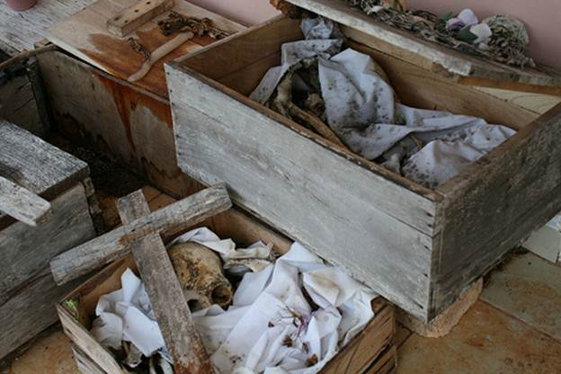
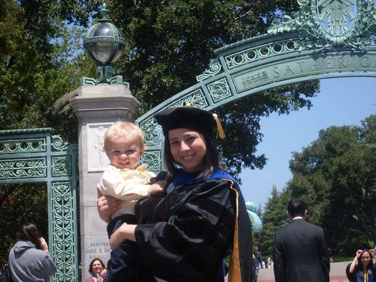

Beatriz Reyes-Foster
Instructor Introduction
Welcome! My name is Beatriz Reyes-Foster and I am a professor in the Department of Anthropology. I am very excited to be your professor this semester, I love anthropology and I think that studying Language and Culture is really, really fascinating. I hope to convey some of my passion for what I do during this semester and I am always happy to talk to students about what it’s like to be an anthropologist.
My academic background is in sociocultural anthropology, though I consider my work to fall within the field of medical anthropology. Right now, I am studying public mental health in Yucatán, Mexico. I am especially interested in how public mental health models that are designed in the United States are understood by Yucatec Maya people who use these services. However, in my career I have studied LOTS of other fascinating aspects of culture, all of which inform my thinking: mortuary ritual, religion, history, and globalization, just to name a few.
I have conducted ethnographic fieldwork in the Lake Atitlán region of Guatemala, in Yucatán, Mexico, and in suburban New Jersey.
Image below: Uayma Convent in Yucatán, Mexico ©Beatriz Reyes-Cortes
Image below: Maya cemetery in Sisbicchén, Yucatán

I LOVE doing fieldwork and I love that I have a job that lets me pursue research. In class and online, you will hear me often referring back to my own research experiences when discussing course material.
I really hope you enjoy this class!!!!!!
About Me
I am originally from Yucatán, Mexico, but have lived in the United States since childhood. I did my undergraduate work at Rutgers University in New Jersey (where I studied under the author of our textbook and fell in love with anthropology!) and then went on to obtain my Ph.D. from UC Berkeley, on one of the most beautiful college campuses in the United States.
Image below: Dr. Reyes-Foster on her Graduation from UC Berkeley in 2011

I have a toddler I talk about often precisely because he’s in the middle of acquiring language, and just because he’s awesome ☺. I also really like The Office, cooking, and traveling. Oh, and I’m an NPR addict so I will often incorporate interesting stories I hear on it into my courses.